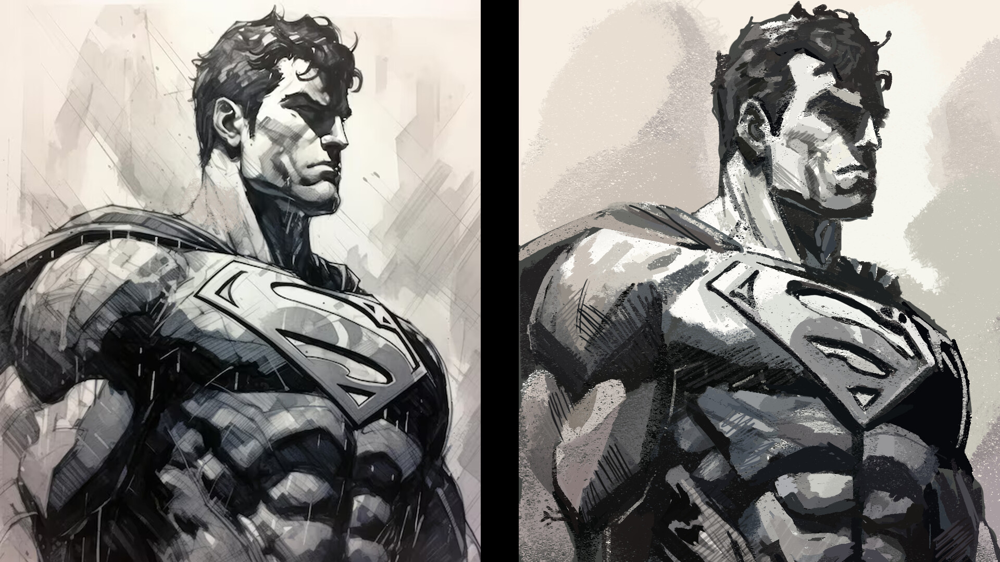

Illustration plays a vital role in concept art, especially when it comes to storytelling. Illustrations help convey the mood, atmosphere, and narrative elements of a scene or character design. These pieces are often more detailed and refined than rough sketches or thumbnails, as they need to sell the idea to the client, director, or development team. Whether depicting key moments in the plot or establishing a world’s lore, illustration brings these concepts to life.
In addition to storytelling, illustration serves as a critical tool for visual development. Artists use illustrations to explore different design directions, experimenting with color palettes, shapes, and compositions to find the best fit for the project’s aesthetic. These polished pieces are used as references throughout the production process, guiding the final look and feel of the film, video game, or animation.
Beyond their practical uses, illustrations often serve as a source of inspiration for other artists. A well-executed illustration can spark new ideas, inspire innovative design solutions, or set the tone for a broader creative direction. In this sense, concept art illustrations can be both a practical tool and a catalyst for creativity within a production team.
 A recreation of Jim Lee's Superman by AARYA N.